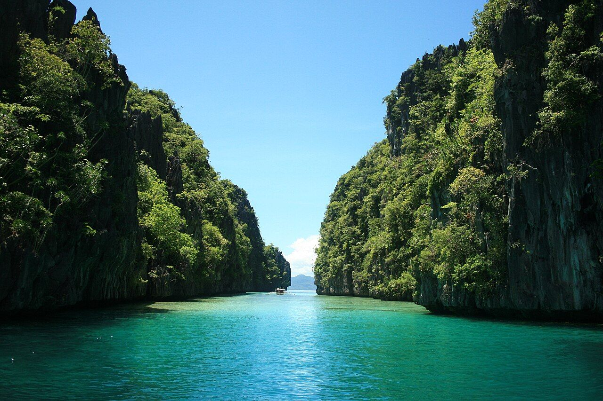

Panglao, Bohol
Panglao is a charming island in the Philippines known for its pristine beaches, clear waters, and rich cultural heritage. It's a perfect destination for those seeking a tranquil escape and authentic local experiences.


Visitors can enjoy water sports, explore local markets, and experience the warm hospitality of the Filipino people. Panglao is also a gateway to the beautiful Bacuit Archipelago, where you can island-hop and discover secluded spots that are perfect for relaxation and exploration.